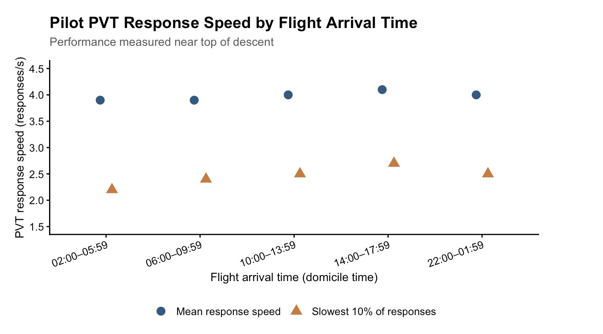
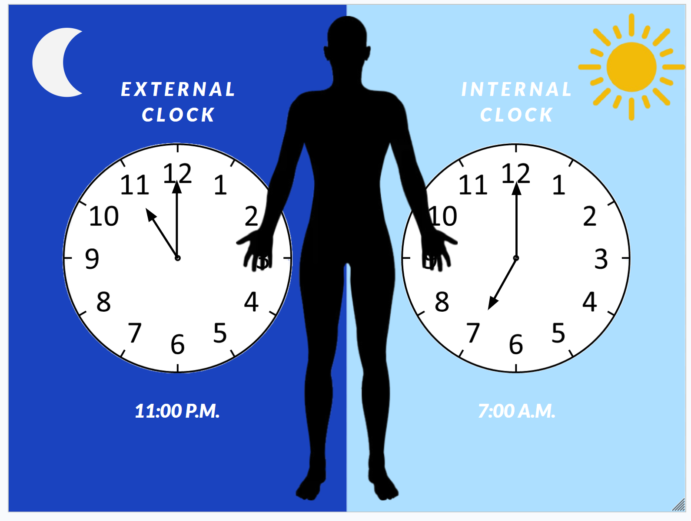
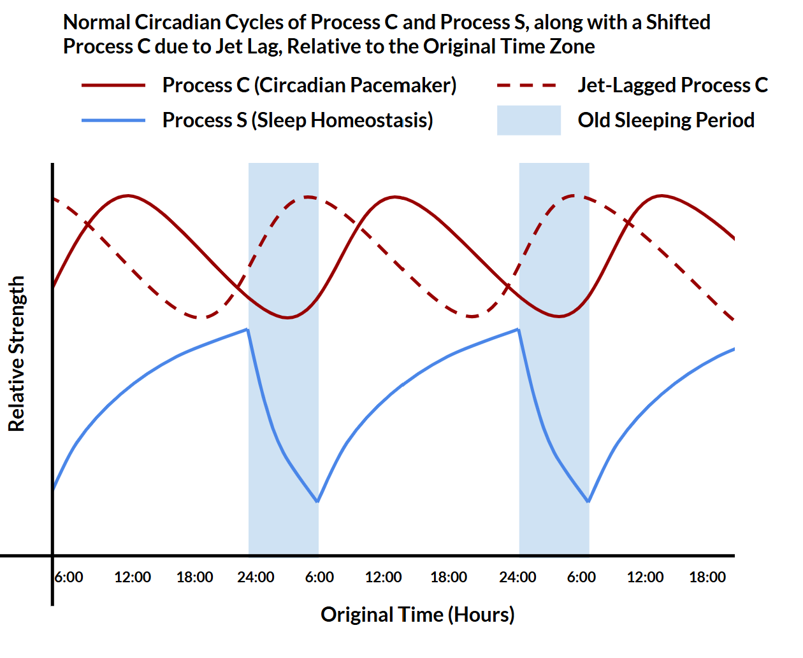
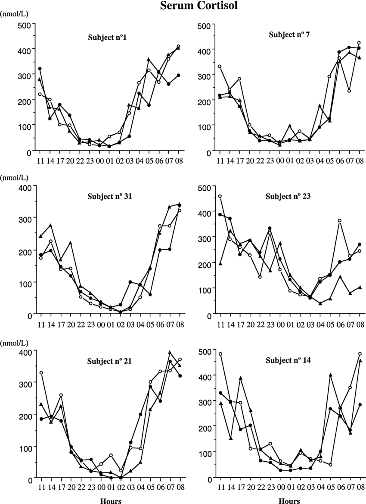

CONTRIBUTORS
- Sarah Kim
- Graphic Designer
- Peer Reviewer
- Subject Matter Expert: Caffeine
- Benjamin Shamash
- Copyeditor
- Peer Reviewer
- Subject Matter Expert: Sleep/Wake Cycle
- Joseph Sultan
- Copyeditor
- Peer Reviewer
- Subject Matter Expert: Flying Against the Biological Clock
- Sebert Supamongkolthaveesuk
- Copyeditor
- Peer Reviewer
- Subject Matter Expert: Jet lag & Internal Desynchrony
LEARNING OBJECTIVES
After reading this chapter, students should be able to … Ben
- Describe the sleep/wake cycle and explain its relationship to circadian rhythms
- Explain how circadian rhythms regulate sleep through the internal biological clock, light exposure, and melatonin.
- Analyze how factors such as artificial light, travel, and irregular schedules can disrupt circadian rhythms and affect daily functioning
- Evaluate everyday sleep habits and identify strategies that can help maintain a healthy and consistent sleep/wake cycle.
Joseph
- Apply chronobiological principles to explain fatigue risks created by aviation schedules
- Interpret chronobiological data and experimental results from pilot fatigue research
- Interrelate chronobiology with aviation medicine, human factors, and aviation safety
- Explain how biological timing influences pilot physiology, alertness, and behavior
Sebert
- Construct/interpret visuals of how sleep/wake cycles adjust from jet lag over time, using zeitgebers and other external cues
- Relate how changes made to one circadian rhythm can indirectly alter the timing of other circadian rhythms
- Differentiate between synchronized and desynchronized rhythms: how can you determine if a rhythm is mistimed and its underlying cause?
- Critique the effectiveness of various intervention methods used by the body and exogenous methods in addressing and recovering from jet lag.
Sarah
- Readers will be able to understand where caffeine is commonly found, explain its purpose, and describe its effects on the body.
- Readers will be able to describe how caffeine affects the brain, body, and sleep-wake system.
- Readers will be able to analyze how consuming caffeine at different times of the day affects sleep quality and the body's natural sleep-wake cycle.
- Readers will be able to apply scientific findings about caffeine timing to real-world situations involving daily schedules and sleep habits and identify relationships between the timing of caffeine consumption and sleep quality.
CHAPTER OUTLINE (Ben) : The Sleep/Wake Cycle
Introduction: The Sleep/Wake Cycle (~0.5 page)
- Introduce the idea that sleeping and waking up follow a predictable daily rhythm rather than occurring randomly
- Define the sleep/wake cycle and explain its connection to circadian rhythms
- Briefly introduce the idea that the body uses both internal and external cues to determine when we feel awake or sleepy
- Transition into how the circadian rhythm controls this timing
Learning Objective addressed: 1 Paragraph 2: How Circadian Rhythms Influence Sleep (~1 Page)
- The internal biological clock
- Explain how circadian rhythms act as an approximately 24-hour internal biological clock that organizes sleep and wakefulness while still being influenced by outside signals
- Light and Darkness
- Explain how light and darkness influence circadian timing, including how evening light from devices can delay sleep and reduce next-morning alertness,
- Use Chang et al. study.
- Chapter Add-In: Graph showing how melatonin levels change across a 24-hour period in relation to light and darkness
- Melatonin
- Explain how darkness increases melatonin signaling and how melatonin helps regulate the timing of sleep.
Leaning Objective 2 Addressed Paragraph 3: What Can Disrupt the Sleep/Wake Cycle? (~1 Page)
- Artificial Light and Screen Use
- Explain how nighttime light and screen use can suppress melatonin and shift normal circadian timing.
- Chapter Add-In: “Screen vs Book Before Bed” Case study based on the Chang et al. eReader Experiment
- Jet Lag and Behavioral Jet Lag
- Explain how travel across time zones and differences between weekday and weekend schedules can create a mismatch between behavior and the biological clock.
- School, Work, and Irregular Schedules
- Discuss how inconsistent bedtimes, wake times, school schedules, and work schedules can interfere with normal circadian timing.
Learning Objective Addressed: 3
Paragraph 4: Effects of a Disrupted Sleep/Wake Cycle (~1.5 Pages)
- Tiredness and Alertness
- Explain how circadian disruption can lead to daytime tiredness, reduce alertness, and difficulty waking at appropriate times.
- Concentration and Daily Performance
- Discuss how disrupted or poorly timed sleep can make concentration, learning, and everyday performance more difficult.
- Mood and emotional Regulation
- Explain how poor sleep can influence mood, emotional control, and responses to stress
- Use Sikka and Gross source
- Broader Health Effects
- Discuss how repeated disruption of normal circadian timing may affect health beyond just causing tiredness
Learning Objective Addressed: 3
Paragraph 5: Maintaining A Healthy Sleep/Wake Cycle (~1 Page)
- Consistent Sleep and Wake times
- Explain how keeping similar sleep and wake times throughout the week can reduce behavioral jet lag.
- Managing Light Exposure
- Explain how limiting bright light and screens before bed and getting appropriate daytime light can support normal circadian timing
- Melatonin and Circadian Restoration
- Discuss how melatonin and light approaches may be used to help shift or restore disrupted circadian rhythms
- Building a Healthy Sleep/Wake Routine
- Chapter Add-In: How-To Box on maintaining a healthy Circadian Rhythm through consistent sleep timing and light exposure
Learning Objective Addressed: 4
CHAPTER WRITTEN CONTENT (Ben) : The Sleep/Wake Cycle
Introduction
Every day, the body follows an internal schedule that helps determine when we feel awake, alert, and ready to sleep. The sleep/wake cycle is cyclical in nature and closely related to the circadian system. Circadian rhythms are produced internally by the body, but are often influenced and adjusted by external cues such as light exposure and daily routines. Understanding how circadian rhythms regulate the sleep/wake cycle helps explain why sleep disruptions occur and how healthy sleep patterns can be maintained.
How Circadian Rhythms Influence Sleep
There exists an internal clock within an individual that regulates the sleep/wake cycle throughout the day and generates circadian rhythms with a period of approximately 24 hours. External stimuli, particularly light, can also help regulate the circadian cycle to match the environment. Light during the day promotes wakefulness, while darkness in the evening facilitates sleep-related changes.
Exposure to light at night can disrupt this transition by signaling daytime to the body. In a study by Chang et al. (2015), subjects were asked to read either a printed book or an eReader that emitted light before bed. Subjects using the eReader showed lower alertness the next day, reduced melatonin secretion, delayed circadian phase, and longer time to sleep compared to those who read the printed book. This study shows that exposure to light at night can disrupt sleep at night as well as alter alertness during the day. These results illustrate the influence of external stimuli on the internal sleep/wake cycle.
Another important contributor to the management of the sleep/wake cycle is melatonin. Melatonin is a hormone that plays a role in informing the body when it’s time to start preparing for sleep. The production of this hormone is related to exposure to light. As light levels decrease, melatonin production increases and tends to aid in sleep. Exposure to light can inhibit or postpone the production of melatonin secretion and consequently disrupt circadian phase (Vasey et al., 2021).
Melatonin also plays a significant role in aligning the body to the day/night cycle. If melatonin is secreted at the expected time, then the shift from wake to sleep occurs properly. If there is a shift in the secretion of melatonin there will also be a shift in the sleep/wake cycle. Disruptions in melatonin secretion timing are associated with problems such as jet lag and other circadian sleep disturbances (Zisapel, 2018). Thus, melatonin is an important connection between the body’s internal circadian system and natural sunlight conditions. Light, melatonin, and the circadian
Case Study: Screen vs Book Before Bed
Background
Consuming electronic devices such as a phone, tablet, or computer prior to bed is a fairly common occurrence. The light produced from these devices could have an influence on circadian rhythms. Chang et al. wanted to investigate whether reading from a light-emitting eReader to bed had an effect on sleep compared to reading from a printed book.
The Experiment
Twelve healthy young adults took part in the study. On five separate nights they read for around four hours prior to bedtime from a light-emitting eReader. On the same five nights they also read a printed book in a low-light environment. Alertness the next day, sleep onset, and melatonin release were all measured.
The Results
Participants who used the eReader demonstrated delayed circadian rhythm, longer sleep onset, lower levels of alertness the next day, and decreased melatonin release when compared to participants who read a printed book. This indicates that light emitted from electronic devices prior to bedtime can disrupt the natural sleep/wake cycle (Chang et al., 2015).
Think About It!
- Why might reading from an eReader before bed make it harder for someone to fall asleep compared to reading a printed book?
- How might the results of this experiment relate to students who use their phones or laptops before going to sleep?
Answer Key
- Light emitted from the eReader can suppress melatonin secretion and delay circadian timing, making it harder for the body to prepare for sleep.
- Students who use light-emitting devices before bed may experience delayed sleep timing and reduced alertness the following morning, potentially affecting their performance in school.
What Can Disrupt the Sleep/Wake Cycle?
Although circadian rhythms are generated within the body, modern lifestyles can disrupt the external signals that help maintain circadian timing. One example of this is artificial light. Phones, laptops, televisions, and similar devices can provide bright light at an unusual time of night. Chang et al. (2015) have found that exposure to bright light at an unusual time of night can shift the circadian phase and decrease melatonin. With repeated exposure like this, an individual’s preferred sleep time may shift later, but they are still expected to wake up early due to school or work. As a result, they may get fewer hours of sleep than they need, leading to daytime sleepiness, reduced alertness, and difficulty concentrating throughout the day.
Travel may also cause disruption in the sleep/wake cycle. If an individual rapidly crosses time zones and their circadian clock remains in sync with the time in the previous location, they experience jet lag. For example, when arriving at a new location the time may be nighttime, but the individual's circadian clock may still indicate daytime. It will then take time and environmental signals, especially sunlight, for the circadian system to shift appropriately. There have also been studies on the use of melatonin to shift circadian phase during jet lag. The effectiveness of melatonin depends on when it is taken relative to the individual's internal clock. For example, taking melatonin at an appropriate time may help the body adjust to a new time zone, while taking it at the wrong time can shift the circadian clock in an unwanted direction (Zisapel, 2018).
Another form of disruption is behavioral jet lag, which involves a shift in behaviors such as sleeping, waking, or eating at markedly different times between weekdays and weekends. Xu et al. (2025) examined sleep patterns in young adults and found that larger differences in sleep between weekdays and weekends were correlated with more circadian disruption and later timing of melatonin. This could be especially important to students who wake up early during the week but stay up later and wake up several hours later on the weekend. Although they have not traveled across time zones, their changes in sleep schedule may still create a mismatch with their circadian timing.
Work and school schedules may also cause circadian disruption. An individual’s circadian system may indicate that they are biologically ready to sleep or wake at a certain time, but their work obligations may require them to follow a different schedule. For instance, a night shift worker may need to stay awake during the biological night, when the body is naturally ready for sleep, and attempt to sleep during the biological day. In these cases, behavior, the environmental light-dark cycle, and circadian timing may not be in sync. This is known as circadian misalignment or circadian disruption (Sletten et al., 2020).
Tiredness at times when a person needs to be awake is one of the most noticeable effects of circadian disruption. When the internal clock doesn’t match a person's sleep schedule, they may have difficulty falling asleep and waking up at the times they should. This can result in daytime sleepiness and reduced alertness. Over time, repeated sleep disruption may interfere with concentration, memory, and their ability to perform everyday tasks. Sletten et al. (2020) describe impaired attention, memory, and other aspects of cognition as consequences associated with circadian misalignment, particularly among people experiencing work shifts.
Sleep and circadian timing are also connected to emotional functioning. Sikka and Gross (2023) explain that emotional experiences vary across the wake-sleep cycle rather than remaining constant throughout the day and night. Circadian timing, sleep, daily activities, and other environmental factors can all contribute to these changes. Because emotional experiences are influenced by both sleep and circadian timing, disrupted or insufficient sleep can affect more than physical tiredness. It may also influence mood and the way people respond emotionally to events in their daily lives.
Studies have linked chronic circadian disruption to changes in the immune, cardiovascular, and metabolic systems (Sletten et al., 2020). For instance, glucose metabolism can be disrupted by consuming food during the biological night, and metabolic disorders have also been found in shift workers (Sletten et al., 2020). This indicates that circadian disruption can have consequences on health outside of fatigue and alertness.
Sleep also plays a role in mental and physical health. Good sleep has been linked to mood, immune function, cardiovascular function, hormone regulation, cognition, memory consolidation, and mental health (Baranwal et al., 2023). As such, disruption to the sleep/wake cycle can potentially disrupt a variety of functions within the body, such as hormone regulation, immune responses, and memory consolidation. This could have an influence on both short-term health (such as poor attention) due to poor sleep and long-term health due to chronic circadian and sleep disruption. However, one night of poor sleep does not necessarily have such consequences. The more detrimental effects are more likely to be seen with chronic or repeated circadian and sleep disruption.
Maintaining A Healthy Sleep/Wake Cycle To help synchronize the circadian system to the environment, it is also beneficial to maintain a regular sleep/wake schedule across days of the week to minimize behavioral jet lag (Xu et al., 2025). Also, daily exposure to sunlight and minimizing device use prior to sleep can aid in maintaining proper circadian phase and minimize delays in melatonin onset (Chang et al., 2015). In cases of circadian disruption (e.g., jet lag), appropriately timed light and melatonin may assist in phase-shifting the circadian system to a normal phase (Zisapel, 2018). These strategies can aid in minimizing disruption to the sleep/wake cycle and promote improved sleep and performance. How to Box: Maintaining A Healthy Sleep/Wake Cycle
| Do | Don’t |
|---|---|
| Keep a consistent sleep schedule | Avoid major changes in sleep timing |
| Get natural light during the day | Avoid excessive bright light before bed |
| Maintain a regular nighttime routine | Avoid irregular nighttime habits |
| Allow time to adjust when traveling | Don't expect your internal clock to adjust immediately |
| Understand the importance of melatonin timing | Don't assume taking melatonin at any time will improve sleep |
Works Cited
Baranwal, N., Yu, P. K., & Siegel, N. S. (2023). Sleep physiology, pathophysiology, and sleep hygiene. Progress in Cardiovascular Diseases, 77, 59–69. https://doi.org/10.1016/j.pcad.2023.02.005
Chang, A. M., Aeschbach, D., Duffy, J. F., & Czeisler, C. A. (2015). Evening use of light-emitting eReaders negatively affects sleep, circadian timing, and next-morning alertness. Proceedings of the National Academy of Sciences of the United States of America, 112(4), 1232–1237. https://doi.org/10.1073/pnas.1418490112
Sikka, P., & Gross, J. J. (2023). Affect across the wake-sleep cycle. Affective Science, 4(3), 563–569. https://doi.org/10.1007/s42761-023-00204-2
Sletten, T. L., Cappuccio, F. P., Davidson, A. J., Van Cauter, E., Rajaratnam, S. M. W., & Scheer, F. A. J. L. (2020). Health consequences of circadian disruption. Sleep, 43(1), zsz194. https://doi.org/10.1093/sleep/zsz194
Vasey, C., McBride, J., & Penta, K. (2021). Circadian rhythm dysregulation and restoration: The role of melatonin. Nutrients, 13(10), 3480. https://doi.org/10.3390/nu13103480
Xu, Y. X., Li, J., Wan, Y. H., Su, P. Y., Tao, F. B., & Sun, Y. (2025). Association between behavioral jet lag with subjective and objective circadian rhythm among Chinese young adults. Social Science & Medicine, 366, 117689. https://doi.org/10.1016/j.socscimed.2025.117689
Zisapel, N. (2018). New perspectives on the role of melatonin in human sleep, circadian rhythms and their regulation. British Journal of Pharmacology, 175(16), 3190–3199. https://doi.org/10.1111/bph.14116
CHAPTER Outline (Joseph) : The Sleep/Wake Cycle
Unit: Circadian Rhythms Chapter: Flying Against the Biological Clock Learning Objectives:
- Apply chronobiological principles to explain fatigue risks created by aviation schedules
- Interpret chronobiological data and experimental results from pilot fatigue research
- Interrelate chronobiology with aviation medicine, human factors, and aviation safety
- Explain how biological timing influences pilot physiology, alertness, and behavior
Chapter Outline Flying Against the Biological Clock
- Purpose: Introduce aviation as a real-world application of circadian biology rather than reteaching the basic circadian system.
- Why aviation creates a unique conflict between biological and operational time
- Overnight and early-morning flights
- Irregular work schedules
- Rapid movement across time zones
- Difference between sleep deprivation and circadian disruption
- Introduce the Window of Circadian Low (WOCL)
How Flight Schedules Disrupt Circadian Timing
- Overnight and Early-Morning Operations
- Pilots may be required to work during their biological night
- Early departures and late arrivals can interfere with normal sleep opportunities
- Repeated schedule changes make maintaining a regular sleep schedule difficult
- Transmeridian Flight
- Crossing several time zones rapidly
- Internal biological time versus local time
- Jet lag and incomplete circadian adjustment
- Short-Haul vs. Long-Haul Operations
- Long-haul: time zone changes, long duty periods
- Short-haul: repeated flights, early starts, irregular schedules, limited recovery
- Research showing circadian disruption in real pilot schedules
What Happens to the Pilot?
- Sleepiness and Alertness
- Increased sleepiness during the biological night
- Reduced vigilance
- Interaction between circadian timing and sleep pressure
- Cognitive and Behavioral Effects
- Slower reaction time
- Reduced attention and vigilance
- Decision-making
- Situational awareness
- Biological Time vs. Hours of Sleep
- Fatigue is not determined only by the amount of sleep obtained
- Circadian phase influences performance independently of sleep history
- Interaction among sleep duration, time awake, and biological timing
Case Study: Colgan Air Flight 3407
- The Accident
- February 12, 2009
- Flight approaching Buffalo-Niagra International Airport
- Aircraft entered an aerodynamic stall and crashed near Buffalo
- All 49 people aboard and one person on the ground were killed
- The National Transportation Safety Board (NTSB) determined the probable cause was the captain’s inappropriate response to the stick shaker, leading to an aerodynamic stall from which the aircraft did not recover
- Pilot Sleep and Fatigue
- Examine the captain’s and first officer’s sleep opportunities before the flight
- Commuting and opportunities for adequate rest
- Extended wakefulness and irregular sleep
- Relate these conditions to sleep pressure and circadian timing
- Applying Chronobiology to the Accident
- How inadequate sleep could interact with biological timing
- Possible effects on vigilance, attention, and decision-making
- Connect the case to experimental pilot fatigue research discussed earlier
- Broader Impact
- Increased attention to pilot fatigue and commuting
- Relationship between accident investigations and aviation policy
- Development of stronger flight- and duty-time protections
- Demonstrates how chronobiological research can influence transportation safety
Designing Aviation Around Human Biology
- Flight and Duty Scheduling
- Flight-time and duty-time limitations
- Rest requirements
- Importance of considering when a flight occurs, not only how long pilots work
- Fatigue Risk Management
- Fatigue Risk Management Systems (FRMS)
- Using scientific and operational evidence to identify fatigue risks
- Scheduling around known periods of reduced biological alertness when possible
- Countermeasures
- Pre-light sleep and naps
- Controlled rest
- Strategic caffeine use
- Light exposure
- Scheduling and adequate recovery periods
- Limitations
- Countermeasures can reduce but can’t completely eliminate fatigue
- Regulations based only on hours worked can’t fully account for circadian timing
- Aviation illustrates the need to design human systems around biological limitations
Key Vocabulary
- Window of Circadian Low (WOCL): The period of the biological night when alertness and performance are typically lowest and the drive for sleep is greatest
- Fatigue Risk Management System (FRMS): A science-based system used by aviation organizations to identify, monitor, and attempt to reduce fatigue-related safety risks
- Flight Duty Period (FDP): The regulated period beginning when a pilot reports for duty and ending after completion of the final flight, used in determining fatigue-related scheduling limits
- Controlled Rest: A planned, limited period of sleep on the flight deck used as an operational countermeasure to improve pilot alertness during appropriate phases of flight
- Augmented Flight Crew: A flight crew with additional qualified pilots beyond the minimum required, allowing pilots to rotate into scheduled in-flight rest during long operations
Sources
Flynn-Evans, E. E., Bathurst, N., Pradhan, S., Gregory, K. B., Barger, L. K., Lamp, A. C. M., Glaros, Z., Arsintescu, L., Jansen, R. A., Baumgartner, H. M., Nesthus, T. E., & Hilditch, C. J. (2026). Characterizing Pilot Fatigue During Circadian-Disrupted Short-Haul Aviation Operations. Aerospace Medicine and Human Performance, 97(8), 607–617. Aerospace Medical Association. https://doi.org/10.3357/AMHP.6898.2026
Gander, P. H., Mulrine, H. M., van den Berg, M. J., Smith, A. A. T., Signal, T. L., Wu, L. J., &
Belenky, G. (2015). Effects of sleep/wake history and circadian phase on proposed pilot fatigue safety performance indicators. Journal of Sleep Research, 24(1), 110–119. PubMed. https://doi.org/10.1111/jsr.12197
Hilditch, C. J., Gregory, K. B., Arsintescu, L., Bathurst, N. G., Nesthus, T. E., Baumgartner, H.
M., Lamp, A. C. M., Barger, L. K., & Flynn-Evans, E. E. (2023). Perspectives on fatigue in short-haul flight operations from US pilots: A focus group study. Transport Policy, 136. https://doi.org/10.1016/j.tranpol.2023.03.004
National Transportation Safety Board (NTSB). (2010). Loss of Control on Approach, Colgan Air,
Inc., Operating as Continental Connection Flight 3407, Bombardier DHC-8-400, N200WQ, Clarence Center, New York, February 12, 2009 (Aircraft Accident Report NTSB/AAR-10/01).
https://www.ntsb.gov/investigations/accidentreports/reports/aar1001.pdf
Wingelaar-Jagt, Y. Q., Wingelaar, T. T., Riedel, W. J., & Ramaekers, J. G. (2021). Fatigue in
aviation: Safety risks, preventive strategies and pharmacological interventions. Frontiers in Physiology, 12(712628). https://doi.org/10.3389/fphys.2021.712628
Yang, S. X., Cheng, S., Sun, Y., Tang, X., & Huang, Z. (2024). Circadian Disruption in Civilian
Airline Pilots. Aerospace Medicine and Human Performance, 95(7), 381–389. Aerospace Medical Association. https://doi.org/10.3357/AMHP.6316.2024
CHAPTER Written Content (Joseph) : The Sleep/Wake Cycle
Case Study: Colgan Air Flight 3407
The Accident and Preflight Circumstances
On February 12, 2009, Colgan Air Flight 3407 was approaching Buffalo-Niagara International Airport after departing Newark, New Jersey. As the aircraft’s airspeed decreased during the approach, its stick shaker, a warning system that physically vibrates the pilots’ control columns when the aircraft approaches an aerodynamic stall, activated. An aerodynamic stall occurs when the angle between an aircraft’s wings and the oncoming airflow, known as the angle of attack, exceeds a critical threshold, causing airflow separation and a substantial reduction in lift. Rather than initiating the appropriate stall-recovery procedure, the captain pulled backward on the control column, increasing the aircraft’s angle of attack and worsening the stall. The aircraft subsequently crashed into a residence in Clarence Center, New York, killing all 49 people aboard and one person on the ground. The National Transportation Safety Board (NTSB) identified the captain’s inappropriate response to the stall warning as the probable cause of the accident (NTSB, 2010).
Beyond the immediate circumstances of the crash, Flight 3407 raised broader questions about pilot fatigue, particularly how sleep opportunities and activities before reporting for duty may influence operational readiness. Before the accident flight, both pilots had experienced limited opportunities for quality sleep. The captain had spent the previous night in the airline’s crew room, an environment that was not conducive to restorative sleep due to interruptions, noise, activity, and light (NTSB, 2010). The first officer had begun a transcontinental commute from Seattle, Washington approximately 15 hours before her scheduled report time, traveling through Memphis, Tennessee before reaching Newark, New Jersey. According to the NTSB investigation, this commute did not provide an opportunity for an uninterrupted sleep period (NTSB, 2010). These circumstances illustrate an important principle of aviation chronobiology, in which the hours immediately spent flying are only part of a pilot’s fatigue risk. Sleep obtained before duty, time already spent awake, commuting, and biological timing can all influence how alert a pilot is when entering the cockpit.
Sleep Pressure and Circadian Regulation
The crew’s limited and irregular sleep opportunities are particularly relevant when examining the interaction between homeostatic sleep pressure and circadian timing. Sleep pressure increases the longer a person remains awake and decreases through restorative sleep. For both pilots, disrupted or limited sleep opportunities before reporting for duty may have prevented that pressure from fully dissipating. At the same time, the timing of sleep matters. Attempting to sleep during irregular hours or while traveling can conflict with the body’s circadian signals for wakefulness and sleep. Together, elevated sleep pressure and circadian misalignment can impair alertness during flight operations, particularly when duty periods overlap with the biological night or follow insufficient restorative sleep.
The interaction between sleep pressure and circadian timing has important implications for aviation performance, where pilots must sustain attention while processing multiple sources of information. During the approach to Buffalo, the flight crew was responsible for simultaneously tracking airspeed, aircraft configuration, instrument readings, weather conditions, and approach procedures. However, the NTSB investigation identified the crew’s failure to adequately monitor decreasing airspeed during the approach as a contributing factor in the accident (NTSB, 2010). Fatigue can affect functions involved in this task, including vigilance, attention, and decision-making. The circumstances surrounding Flight 3407 illustrate the operational relevance of research examining the relationship between sleep history, circadian timing, and cognitive performance. Researchers investigated how sleep-wake history and circadian phase influence proposed measures of pilot fatigue and safety performance. Their research provides a scientific framework for understanding why inadequate sleep and biological timing must be considered when evaluating the cognitive demands of flight operations (Gander et al., 2015).
Preflight Fatigue and Restorative Sleep
Although the captain and first officer reported for the same flight, their preceding sleep-wake histories differed substantially. The captain’s overnight stay in the crew room and the first officer’s extended commute illustrate how fatigue-related risks, such as insufficient sleep or irregular sleep schedules, can develop before a scheduled duty period begins. The NTSB found evidence that the captain had been awake at several points during the night and concluded that both pilots had experienced some degree of sleep loss. The investigation considered fatigue an important safety issue and examined how the pilots’ activities before reporting for duty may have affected their performance, raising broader concerns about fatigue management in commercial aviation (NTSB, 2010).
The pilots’ contrasting preflight experiences highlight a broader limitation of aviation scheduling, that time allocated for rest does not necessarily translate into sufficient biological recovery. Although scheduled rest periods provide opportunities for sleep, their restorative value depends on whether individuals can obtain sleep of adequate duration and continuity. Effective recovery requires opportunities for sleep that are sufficiently long, continuous, and free from environmental disturbances. The first officer’s commute illustrates this problem particularly well. Traveling overnight from Seattle toward Newark created opportunities to sleep, including while aboard an aircraft, but these opportunities differed from a consolidated sleep period in a normal sleeping environment. The captain’s use of the crew room presented a different form of the same problem. Although he was not performing flight duties during the night, the environment did not provide ideal conditions for continuous sleep. Consequently, measuring only the time between scheduled duty periods would provide an incomplete description of either pilot’s physiological state before the accident flight.
From Chronobiological Research to Aviation Safety
The relationship between homeostatic sleep pressure and circadian timing further complicates the distinction between scheduled rest and biological recovery. Although both processes influence sleepiness and alertness, they operate through different physiological mechanisms. Homeostatic sleep pressure accumulates during wakefulness and decreases during sleep, whereas the circadian system regulates daily fluctuations in the tendency toward sleep and wakefulness. Consequently, obtaining several hours of sleep may reduce accumulated sleep pressure without necessarily aligning an individual’s internal biological timing with the demands of their environment. Conversely, the circadian promotion of wakefulness during the biological day is unable to fully compensate for substantial prior sleep loss. The circumstances surrounding Flight 3407 illustrate how these interacting processes must be considered when evaluating fatigue-related risks, particularly when individuals experience irregular sleep schedules or insufficient opportunities for restorative sleep.
Beyond Aviation: Implications for Everyday Life
Aviation operations depend on sustained vigilance, accurate information processing, and coordinated decision-making, particularly during demanding phases of flight. These cognitive functions are sensitive to sleep loss and circadian disruption, illustrating why fatigue management must account for human physiological limitations alongside operational requirements. Controlled laboratory studies allow researchers to examine how sleep history and circadian phase influence alertness and cognitive performance under systemically measured conditions. Aviation operations, however, introduce additional demands, including complex decision-making, environmental variability, and the need to maintain attention over extended periods. The circumstances surrounding Flight 3407 demonstrate the practical importance of studying these biological processes in operational settings, where reductions in vigilance may have serious safety implications. Experimental measures such as reaction time or sustained attention may appear small when considered by themselves, but aviation requires these functions to remain reliable for extended periods. The case therefore provides a bridge between chronobiological data and the practical study of human factors, the ways in which human abilities and limitations interact with equipment, environments, and procedures.
Although aviation provides a particularly consequential example of fatigue-related performance risks, the underlying biological mechanisms extend beyond the cockpit. University students studying late into the night, healthcare professionals working rotating shifts, and individuals traveling across multiple time zones experience similar interactions between accumulated sleep pressure and circadian timing. For example, a student who remains awake studying for an early exam may experience reduced vigilance and slower information processing because of elevated sleep pressure, even when motivated to remain attentive. Similarly, individuals working overnight may experience increased sleepiness when their schedules conflict with the circadian system’s normal promotion of sleep during the biological night. These examples demonstrate that the relationship between biological timing and cognitive performance is a fundamental feature of human physiology rather than a phenomenon unique to aviation.
Ultimately, the case of Colgan Air Flight 3407 demonstrates why sleep must be understood as a biological process, rather than simply a period of inactivity between scheduled responsibilities. Adequate recovery depends not only on the amount of time available for sleep but also on sleep continuity, prior wakefulness, and alignment with the body’s circadian rhythms. Maintaining consistent sleep schedules and allowing sufficient opportunities for uninterrupted sleep can help support alertness and cognitive performance, although these practices are unable to eliminate every source of fatigue. The broader lesson of aviation chronobiology is that human performance cannot be evaluated solely through scheduled work hours or time spent resting. Instead, understanding the interaction between sleep pressure and circadian timing provides a scientific foundation for recognizing fatigue-related risks in aviation, education, healthcare, and other aspects of everyday life.
Chapter Add-In
The Psychomotor Vigilance Task (PVT) is a test of sustained attention, or the ability to maintain focus over time. Participants respond as quickly as possible when a visual stimulus appears on a screen. Researchers measure reaction time, the interval between the appearance of the stimulus and the participant’s response. These measurements can be converted into response speed, expressed in responses per second (s-1). Higher response speeds indicate faster reactions and generally better performance on the task.
Gander et al. (2015) examined PVT performance among commercial airline pilots during long-range and ultra-long-range flights. The researchers measured performance near the top of descent (TOD), when an aircraft begins descending toward its destination. Flights were grouped according to arrival time expressed in domicile time, the local time in the city where each trip began and ended. This served as an approximate indicator of circadian phase.
The researchers were particularly interested in whether the timing of flight operations was associated with differences in pilots’ alertness and cognitive performance. This relationship is important, as circadian rhythms influence the body’s natural tendency toward sleep and wakefulness throughout the day. During the biological night, when the circadian system promotes sleep, individuals may experience greater difficulty maintaining attention and responding quickly to stimuli. In aviation, these changes are especially relevant during demanding phases of flight, when pilots must continuously process information and respond to changing conditions. Examining PVT performance across different arrival times therefore provides insight into how biological timing may relate to the cognitive abilities required for safe flight operations.

CHAPTER Outline (Sarah)
Outline of 5-page Contribution
- Introduction to Caffeine- Learning Objective: Readers will be able to understand where caffeine is commonly found, explain its purpose, and describe its effects on the body.
- What is Caffeine and Where is it Found?
- Why Do People Consume Caffeine?
- How Caffeine Affects the Brain and Body- Learning Objective: Readers will be able to describe how caffeine affects the brain, body, and sleep-wake system.
- Caffeine and the Central Nervous System
- Adenosine and Sleep Pressure
- Caffeine's Effects on the Sleep-Wake System
- Caffeine Timing and Sleep Quality- Learning Objective: Readers will be able to analyze how consuming caffeine at different times of the day affects sleep quality and the body's natural sleep-wake cycle.
- The Circadian Rhythm and Biological Clock
- Caffeine Consumption in the Morning
- Caffeine Consumption in the Afternoon
- Caffeine Consumption in the Evening
- Readers will be able to apply scientific findings about caffeine timing to real-world situations involving daily schedules and sleep habits and identify relationships between the timing of caffeine consumption and sleep quality.
5 Vocabulary Words
- Caffeine: A widely consumed stimulant, found in coffee and other beverages, that can improve performance and alertness while reducing tiredness. (O'Callaghan et al., 2018).
- Circadian Rhythm: A self-sustaining biological rhythm that follows an approximately 24-hour cycle and continues even without external time cues. It regulates processes such as sleep, wakefulness, body temperature, and hormone release. (Czeisler et al., 2019).
- Sleep Efficiency: The percentage of time spent in bed that a person is actually asleep (O'Callaghan et al., 2018).
- Sleep-Wake Cycle: An approximately 24-hour biological cycle that regulates periods of sleep and wakefulness, primarily influenced by the circadian pacemaker, the body's internal biological clock (Beersma et. al, 2007).
- Adenosine: A chemical produced through cellular metabolism that acts as a neuromodulator in the nervous system and regulating sleep. Adenosine builds up during wakefulness, increasing feelings of sleepiness, and decreases during sleep (Antle et al., 2001).
CHAPTER WRITTEN OUTLINE (Sarah Kim): Caffeine Name: Sarah Kim
Unit: Circadian Rhythms (~24 hours)
How Does the Timing of Caffeine Consumption Affect Sleep?
INTRODUCTION TO CAFFEINE
- What is Caffeine and Where is it Found?
Caffeine, one of the most widely consumed stimulants worldwide, is a naturally
occurring compound belonging to the methylated xanthine group, which also includes
theophylline, found in tea, and theobromine, found in cocoa (Portillo et al., 2022). While most
people think of coffee or energy drinks when they think of caffeine, caffeine comes from many
other sources commonly found in people’s daily lives. It can be found in more than 60 plant
species, but the most common natural sources of caffeine include coffee beans, tea leaves, kola
nuts, and cocoa beans (Tarka et al., 1998). After consumption, caffeine typically reaches its
highest concentration in the bloodstream within approximately 45–60 minutes. Though, this
number varies with each person (Ágoston et al., 2017). In the United States, coffee accounts for
approximately 75% of total caffeine intake, while tea contributes 15% and caffeinated soda
contributes 10%, respectively. In sources like chocolate and caffeine-containing medications,
caffeine makes up a smaller portion, as the amount of caffeine depends on the plant source and
type of product (Tarka et al., 1998). Caffeine is found in almost everyone’s daily life, and people
may consume it more than they think, which is why it is important to know how caffeine can
affect your body and sleep.
- Why Do People Consume Caffeine?
In a 2017 cross-sectional study, Ágoston et al. identified six main reasons why
participants consumed caffeine: to increase alertness, out of habit, to improve mood, for social
reasons, for its taste, and to manage symptoms. These motivations reflect caffeine's stimulating
effects on the central nervous system, its role in daily routines, and its ability to temporarily
reduce fatigue and sleepiness. Generally, caffeine is also known for reducing tiredness,
improving alertness, and increasing reaction speed (Ágoston et al., 2017). A study by Orbeta et
al. (2006) examined 15,686 American adolescents and found that people who reported
consuming high amounts of caffeine were more likely to experience morning tiredness than those
who consumed very little caffeine, even after accounting for socioeconomic factors. Although
caffeine is commonly used to increase alertness and reduce the effects of fatigue, people who are
already tired may consume more caffeine to feel awake. This creates a potential cycle in which
caffeine is used to manage tiredness while also potentially contributing to the fatigue experienced
by individuals (Orbeta et al. 2006).
HOW CAFFEINE AFFECTS THE BRAIN AND BODY
- Caffeine and its effects on the Central Nervous System and Adenosine
When consumed in beverages, caffeine acts on the central nervous system by blocking
adenosine receptors, reducing drowsiness (Portillo et al., 2022). As a central nervous system
(CNS) stimulant, caffeine contributes to its psychostimulant effects and influences cognitive
functioning (Fiani et al., 2021). Caffeine can affect cognitive abilities in both humans and
animals, as caffeine is seen to be related to improved memory retention (Fiani et al., 2021).
Caffeine may also decrease the availability of serotonin, which can reduce its calming effects on
brain activity. This change can influence processes related to sleep, motor function, and the regulation of blood vessels in the brain, all of which are affected by serotonin (Nehlig et al.,
1992).
- Caffeine's Effects on the Sleep-Wake System and the Circadian Rhythm
In human cells, caffeine causes the circadian period to become longer. Researchers found
that this effect was primarily connected to adenosine receptors and cAMP signaling, which are
involved in cellular communication and circadian regulation (Reichart et al. 2022). Beyond its
effects on the body's internal clock, caffeine's impact on alertness may also vary depending on
when it is consumed and how sleepy a person is. As someone stays awake longer, their need for
sleep gradually increases, often leading to greater sleepiness around midday. Research suggests
that caffeine's ability to increase alertness may vary depending on these factors. Its stimulating
effects may be more noticeable around midday, when sleepiness is greater, than in the evening
(Roehrsa & Rotha, 2017).
CAFFEINE TIMING AND SLEEP QUALITY
- Caffeine Consumption in the Morning
Morning tiredness may lead people to consume more caffeine, which can then contribute
to poorer sleep in the long run (Snel et al. 2011). Researchers have found that feeling tired in the
morning can lead people to consume more caffeine, creating the “coffee cycle”, where one finds
themselves in a loop where morning drowsiness leads to high caffeine intake. This then ruins
nighttime sleep quality and causes even more exhaustion the next day (O'Callaghan et al. 2018).
In a study done by Landolt et al. (1994), participants were given 200 mg of caffeine at 7 a.m. and
were monitored using electroencephalography (EEG). Even though caffeine levels had significantly decreased by the time participants went to sleep, both sleep efficiency and total
sleep time (TST) were lower compared with the placebo condition. The researchers concluded
that caffeine remaining in the central nervous system can reduce the gradual development of
drowsiness that normally occurs after being awake for long periods of time (Landolt et al. 1994).
- Caffeine Consumption in the Afternoon
Consuming caffeine even six hours before bed significantly disrupted sleep compared
with a placebo (O'Callaghan et al. 2018). Caffeine also changed the timing of different sleep
stages, causing rapid eye movement (REM) sleep to occur earlier in the night and stages 3 and 4
to occur later during the shortened sleep period. Many studies have focused on caffeine
consumed during the daytime, with several hours between consumption and falling asleep. This
time gap can make it difficult to separate caffeine effects from other factors that may influence
sleep, such as food and dietary intake (O’Callaghan et al. 2018).
- Caffeine Consumption in the Evening
A 100 mg dose of caffeine consumed immediately before sleep alters non-REM brain
activity by reducing delta waves, which weakens deep restorative rest, while simultaneously
increasing sleep spindles to block external disturbances. Although the brain attempts to maintain
sleep stability through these bursts of activity, overall sleep quality is compromised (Landolt et
al. 1995). Additionally, evening caffeine caused the melatonin rhythm to shift by about 40
minutes later compared with the placebo condition (Reichart et al. 2022). Therefore, consuming
caffeine in the evening can change the timing of the body's circadian system. This potentially
contributes to a later sleep schedule by delaying the biological clock.
APPLYING RESEARCH ON CAFFEINE TIMING TO SLEEP HABITS
- Findings from A Scientific Study
Scientific studies have found that the effects of caffeine on sleep depend on both the
amount consumed and the time it is consumed. In a randomized, placebo-controlled crossover
trial, Gardiner et al. (2025) examined how consuming 100 mg or 400 mg of caffeine at different
intervals before bedtime affected sleep. The researchers found that the 100 mg dose did not
significantly affect sleep outcomes, while the 400 mg dose disrupted sleep even when consumed
12 hours before bedtime.
These disruptions included taking longer to fall asleep, reduced total sleep time, and
changes in sleep structure, with more pronounced effects when caffeine was consumed closer to
bedtime. The findings suggest that consuming larger amounts of caffeine can affect sleep long
after consumption, even when people drink it earlier in the day. However, individual responses to
caffeine may vary, and the study's small sample of 23 adult men limits how broadly the results
can be generalized. Overall, this research demonstrates the importance of considering both
caffeine dosage and timing when examining their relationship with sleep quality (Gardiner et al.
2025).
- Conclusion Connecting Back to Daily Life
Although caffeine is often treated as a simple way to stay awake, its effects on sleep
depend on more than just how much a person consumes. The research discussed in this chapter
shows that caffeine can influence sleep even when it is consumed in the morning, several hours
before bedtime, or immediately before going to sleep. Morning consumption may contribute to a
cycle in which poor sleep leads to greater caffeine intake the following day, while afternoon
consumption can disrupt sleep even when there is a six-hour gap before bedtime. In the evening, caffeine may interfere with deep sleep and delay the body's internal clock, potentially shifting a
person's natural sleep schedule. These findings show that the timing of caffeine consumption
matters because its effects can continue long after a person initially feels more alert. In everyday
life, this matters especially for students and others who rely on coffee to manage busy schedules,
study, or combat daytime fatigue. Rather than focusing only on the amount of coffee consumed,
individuals should also consider when they drink it and how it may affect their sleep later that
night. Ultimately, understanding the relationship between caffeine timing and sleep can help
people make more informed decisions about their daily routines and recognize the importance of
balancing alertness with sufficient sleep.
CHAPTER ADD-INs
Sample Exercise: Coffee & Sleep Diary
Meet Alex: Alex is a college student who drinks coffee to stay awake during classes and while studying. Alex recorded his coffee habits and sleep for one week to see whether the time they drink coffee might be related to their sleep quality.
| Day | Time of Coffee | Amount (Cups) | Bedtime | Sleep quality (1–5) |
|---|---|---|---|---|
| Monday | 8:00 AM and 3:00 PM | 2 | 11:00 PM | 3 |
| Tuesday | 9:00 AM | 1 | 11:30 PM | 4 |
| Wednesday | 2:00 PM | 1 | 11:15 PM | 3 |
| Thursday | 3:00 PM and 5:00 PM | 2 | 12:00 AM | 2 |
| Friday | 8:30 AM | 1 | 11:30 PM | 5 |
| Saturday | 5:00 PM | 1 | 12:30 AM | 2 |
Sunday
10:00 AM 1 11:00 PM After one week: Alex's reflections
- What time did you usually drink coffee?
Alex usually drank coffee in the morning, but on Wednesday, Thursday, and Saturday, Alex drank it in the afternoon or evening.
- Did your sleep quality seem to change depending on when you drank it?
Alex noticed that sleep quality ratings were generally higher on the days when coffee was consumed in the morning. On days when coffee was consumed later, the ratings were lower. Saturday had the lowest rating after coffee at 5:00 PM.
- Did your observations match what you expected?
Alex expected evening coffee to have the biggest effect on sleep. The results seemed to support this prediction, although one week of observations cannot prove that coffee timing was the cause of the differences.
- How do your results compare with the research from the chapter?
Alex's observations are consistent with research suggesting that caffeine consumed later in the day can interfere with sleep. Caffeine can remain in the body for several hours, potentially making it harder to fall asleep or affecting sleep quality. However, Alex's diary only shows a possible relationship, not proof of direct cause and effect.
Try It Yourself: Coffee & Sleep Diary Exercise
For one week, record:
Day
Time of Coffee Amount (Cups) Bedtime Sleep Quality 1-5 Monday
Tuesday
Wednesday
Thursday
Friday Saturday
Sunday
After one week:
- What time did you usually drink coffee?
- Did your sleep quality seem to change depending on when you drank it?
- Did your observations match what you expected?
- How do your results compare with the research from the chapter?
CHAPTER OUTLINE (Sebert): Jet Lag and Internal Desynchrony
Subtitle 1: What is Jet Lag and Internal Desynchrony, and How Are They Caused? (~½ Page)
- Brief explanation of both what jet lag and internal desynchrony is.
- (VOCAB) Jet Lag (Circadian Desynchrony): temporary disturbance to the natural sleep/wake cycle (and other physiological processes discussed later) due to travel across time zones
- (VOCAB) Internal Desynchrony: When your internal biological clocks are out of sync with each other and/or the environment
Subtitle 2: Disruption of Human Circadian Rhythms (~3 Pages)
- Brief explanation of why circadian rhythms are affected by jet lag and how it causes desynchrony between the master clock and peripheral clocks
- (VOCAB) Suprachiasmatic Nucleus: the biological master clock of the human body, located in the hypothalamus of the brain
Subsection 1: The Sleep/Wake Cycle
- Brief introduction to the 24-hour sleep/wake cycle, and how it is controlled
- Short discussion on the two-system model of sleep/wake cycle that continuously works in tandem to regulate sleep/wake cycle (Borbély, A. A., Daan, S., Wirz‐Justice, A., & Deboer, T. (2016). The two‐process model of sleep regulation: a reappraisal. Journal of Sleep Research, 25(2), 131–143. https://doi.org/10.1111/jsr.12371):
- (VOCAB) Process S: Homeostatic pressure input
- (VOCAB) Process C: Circadian pacemaker
- Function of Melatonin in controlling sleep/wake cycle
- (VOCAB) Melatonin: a natural hormone produced in the pineal gland of the brain responsible for inducing drowsiness in preparation for sleep
- Long-term impact on sleep architecture (Avidan, A., & Colwell, C. (2010). Jet lag syndrome: circadian organization, pathophysiology, and management strategies. Nature and Science of Sleep, 2, 187. https://doi.org/10.2147/nss.s6683)
- (VOCAB) Sleep Architecture: The cycling through different stages of sleep, critical to proper rest
- How these biological processes are disturbed by jet lag and hence cause desynchronization.
- Mistimed hormonal releases and light cues that confuse your body, etc.
- Learning Objective 1: Construct visuals of how sleep/wake cycles adjust from jet lag over time. After learning more about the sleep/wake cycle, how it is impacted by jet lag, and how the body naturally readjusts over time, you should be able to hypothesize and construct visualizations of how sleep/wake cycles slowly readjusts, using zeitgebers and other external cues.
Subsection 2: Other Circadian Rhythms Affected (Probably will change this name
- Discuss various other circadian rhythms that are affected (which I won’t go into as much depth, since sleep/wake is the primary one. However, there can be an included chapter add-in focusing on one of these other rhythms):
- Metabolism and Digestion
- Body Temperature
- Cortisol Levels
- Immune and Cardiovascular Function
- Learning Objective 2: Relate how changes made to one circadian rhythm can indirectly alter the timing of other circadian rhythms (Ex: how does a desynched sleep/wake cycle cascade downstream to the various peripheral biological cycles)
Subtitle 3: Disruptions to Human Ultradian Rhythms (~3 pages)
- Explore the disruptions made to the human ultradian rhythms; brief intro to infradian rhythms
- (VOCAB) Ultradian Rhythms: Biological rhythms that periodically repeat and cycle over periods of time shorter than 24 hours
Subsection 1: Deep Dive: the Menstrual Cycle
- Introduction to the menstrual cycle and its cyclic use of hormones to coordinate and regulate its process
- Estrogen, Progesterone, Follicle-Stimulating Hormone, Luteinizing Hormone
- Exploring how changing time zones affects biological processes that occur over time periods greater than just 24 hours
- Discuss other reproductive damage caused by jet lag, such as decreased reproductive success and increased risk for breast cancer (repeated, continuous desynchrony) (Mahoney, M. M. (2010).
Shift work, jet lag, and female reproduction. International Journal of Endocrinology, 2010, 1–9. https://doi.org/10.1155/2010/813764)
- Learning Objective 3: Differentiate between synchronized and desynchronized rhythms: how can you determine if a rhythm is mistimed and its underlying cause? How can you describe it or identify it on a graph (ex: hormone cycles in the menstrual cycle when synchronized vs. unsynchronized)
Subsection 2: The Delayed Healing Tail
- Explore how seemingly minor changes/disruptions can cause prolonged healing stages, which is especially severe for infradian rhythms
- Using the gut microbiome as an example, it takes weeks for the microbiome to be replenished, so abrupt change can cause damage to the microbiome that may take weeks to recover (Bilinski, K., Wisniewski, K., Rafner, L., Witko, R., & Gawel-Dabrowska, D. (2026). Travel-Induced Circadian and Microbiota Disturbances: Implications for Athlete Health and Performance: A Narrative Review. Mdpi.Com. https://www.mdpi.com/2072-6643/18/10/1523)
Subtitle 4: Disruptions to Human Infradian Rhythms (~3 pages)
- Explore the disruptions made to the human infradian rhythms; brief intro to infradian rhythms
- (VOCAB) Infradian Rhythms: Biological rhythms that periodically repeat and cycle over periods of time longer than 24 hours
Subsection 1: Deep Dive: the REM-NREM cycle
- Deeper dive into the cycles that happen within sleep itself, where the mind cycles through various stages of sleep every 90-120 minutes.
- REM, N1, N2, N3
- Explore how sleep architecture is damaged due to jet lag, which fundamentally (though temporarily) alters and disrupts it
- Suppressed REM, reduced deep sleep, sleep fragmentation
Subsection 2: Exploration of BRAC Cycle
- (VOCAB) Basic Rest-Activity Cycle: a natural 90-minute rhythm in the human body, where the body cycles between high alertness and mental rest
- Exploration of both short-term and long-term effects on the BRAC cycle due to jet lag
Subtitle 5: Natural Adaptation, Intervention Methods, and their Limitations (~3-4 pages)
- Explore how the body readjusts to a new time zone over time, whether naturally or through exogenous, artificial interventions. The limitations of each of these methods will also be discussed.
Subsection 1: Natural Adaptation and its Limitations
- Exploration of methods by which the body naturally recovers from jet lag and its symptoms
- The body naturally recovers from jet lag and internal desynchrony through external stimuli.
- Exploration of some of these natural environmental cues, such as sunlight and temperature fluctuations throughout the day
- (VOCAB) Zeitgebers: German word that translates to “time-giver.” They are environmental cues that help the body synchronize with the 24-hour day cycle.
- The body naturally recovers from jet lag and internal desynchrony through external stimuli.
- Analysis of the limitations of zeitgebers on the readjustment of the body to a new time zone.
- For example, the human body usually can only adjust 1.5 hours per day using environmental cues, which also has some variance depending on the direction you traveled
- Organs and other body systems may remain out of sync due to them having their own internal clocks that remain desynchronized even if the master clock (SCN) recovers
- Environmental conditions experience great variability, such as changes in weather conditions over the seasons, or the interference from artificial light sources that further confuses the body
- (Choy, M., & Salbu, R. L. (2011). Jet Lag: Current and Potential Therapies. Pharmacy and Therapeutics, 36(4), 221. https://pmc.ncbi.nlm.nih.gov/articles/PMC3086113/)
Subsection 2: Artificial Interventions and their Limitations
- Exploration of how intervention methods can be used to expedite the recovery stage
- (VOCAB) Exogenous: things that originate from outside the body or body system
- Exogenous and artificial interventions can be split into three main categories, which will be discussed in this section (Arendt, J. (2018). Approaches to the Pharmacological Management of Jet Lag. Drugs, 78(14), 1419–1431.
https://doi.org/10.1007/s40265-018-0973-8):
- (VOCAB) Chronobiotics: substances/drugs that mimic/augment/diminish the body’s natural signals to help the body correct its internal clock faster, such as melatonin
- (VOCAB) Hypnotics: sedative drugs that induce sleep to help anchor the master clock (SCN) to the proper day/night cycle
- (VOCAB) Stimulants: agents that, when used strategically, will induce wakefulness to help align the body with the new time zone’s day/night cycle
- Discussion of the limitations of these artificial methods of expediting the process of readjustment to new time zones.
- Each of the different categories of artificial intervention comes with its own shortcomings:
- Chronobiotics: the drugs must be used at the correct time and correct dosage to get the best effects. Additionally, it will only help with correcting the master clock, not the peripheral clocks
- Hypnotics: Can help push the master clock towards the target time zone, but don’t synchronize the rest of the body. Can lead to grogginess and tiredness, which will be experienced in the next few days
- Stimulants: Often cause a crashing effect; once the stimulant wears off, the body is drastically more tired and can lead to more severe fatigue
- Each of the different categories of artificial intervention comes with its own shortcomings:
CHAPTER WRITTEN CONTENT (Sebert): Jet Lag and Internal Desynchrony
UNIT: CIRCADIAN RHYTHMS
What is Jet Lag and Internal Desynchrony, and How Are They Caused?
Humans are highly influenced by time, which we keep track of using various biological
clocks within our bodies. This tracking of time is highly precise and is controlled by the
suprachiasmatic nucleus (SCN), a portion of the hypothalamus that acts as the master clock of
the human body. However, various problems can arise when this clock is out of sync with the
rest of the body and/or the external environment – a phenomenon called internal desynchrony.
One well-known form of desynchrony is commonly known as “jet lag,” which occurs when the
body rapidly moves across time zones and hence becomes confused as external cues do not align
with the internal clocks. This mismatch of timing of internal biological processes with the actual
time of day can lead to various symptoms, such as severely disrupted sleep cycles. Additionally,
although many know that sleep schedules can get heavily altered due to jet lag, there are also
many other other bodily functions and biological cycles which can be similarly disrupted,
potentially taking weeks to months to fully readjust to normal.
Disruption of Human Circadian Rhythms
Circadian rhythms are biological rhythms that cycle in roughly 24-hour periods. The
most famous of these is the human sleep/wake cycle, which is also the most well-known
disruption due to jet lag. However, to understand how the sleep/wake cycle is affected by jet lag,
we must first understand the underlying processes that control and regulate it. As discussed
earlier, the suprachiasmatic nucleus is the master biological clock within the body, which is also
directly responsible for regulating the sleep/wake cycle. Although the SCN directly controls this
cycle, the way in which it does so is highly complex, with numerous different systems and
hormones all playing intertwined roles in regulating the process.
The Sleep/Wake Cycle
Like most animals, all humans require sleep for proper functioning throughout the day.
Hence, the process of sleeping (and wakefulness) is fine-tuned and regulated to ensure we
receive adequate amounts of sleep when our bodies need it. This sleep/wake cycle is regulated by
two main biological mechanisms that work in tandem: Process S, Sleep Homeostasis, and
Process C, Circadian Pacemaker (Borbély et al., 2016).
Normally, Process S and Process C work perfectly together to regulate when we sleep,
which boils down to promoting a sense of drowsiness to induce sleep. According to Borbely et
al. from a paper in 2016, Process S, sleep homeostasis, is responsible for controlling sleep
pressure (biological urge to sleep), which induces drowsiness in preparation for sleep. This
process continuously builds sleep pressure the longer you stay awake, which ultimately leads to
the amplified feeling of fatigue and drowsiness before sleep. The process occurs through the
accumulation of adenosine, a natural organic compound formed as a byproduct of cell
metabolism that occurs constantly to keep cells alive, inside the brain. This adenosine is. As the
adenosine continues to accumulate inside the brain, it eventually reaches a particular “sleep
threshold,” beyond which the brain signals the body to become more tired and prepare for sleep
by inhibiting and stopping the brain’s arousal networks. During sleep, your body naturally
recycles the adenosine in your brain, resetting the sleep pressure so you feel refreshed once you
wake up. You may think of Process S as an internal stopwatch that keeps track of the amount of
time you’ve been awake through the buildup of adenosine in the brain.
On the other hand, Process C, the circadian pacemaker, is independent of how long
you’ve been awake. As the name suggests, it relies heavily on your body’s circadian rhythm to
dictate when to arouse drowsiness versus alertness throughout the day. This circadian pacemaker is controlled by the SCN and uses a variety of hormones and chemical signals to regulate the
sleep/wake cycle. When you first wake up, hormones like cortisol spike, increasing your stress
and alertness in the morning in preparation for awakening (Sanchez and Dalley, 2025).
Additionally, throughout the morning and day, your body manufactures hormones like serotonin
to keep you active and awake. Serotonin is primarily responsible for maintaining alertness and
keeping your brain active and responsive. However, as night approaches and the sun goes down,
your body starts the process of turning serotonin into melatonin, a hormone responsible for
inducing sleep and drowsiness. This conversion is controlled by the SCN, which receives cues
and signals from environmental factors such as sunlight and darkness. As more melatonin is
synthesized, it signals the body to start shutting down, relax, and prepare for sleep. *Visual graph
would go here*
Although Process S and Process C work in sync to regulate our sleep/wake cycle, jet lag
uncouples these two processes and thereby leads to chaos in the rhythm. Process S is dependent
specifically on how long we remain awake and is mostly unaffected by changes in environmental
cues and time zones. However, Process C relies heavily on the local time and the current state of
the SCN. Hormone production gets misaligned with the current time zone, and chemical signals
are released at the wrong time of day. Even though environmental cues help Process C slowly
realign with the current time, there nonetheless remains a mismatch between the two processes.
For instance, if it is night in your new time zone but morning in your previous time zone,
Process C would have produced a large amount of serotonin to promote wakefulness. Even if
Process C was able to readjust quickly and started synthesizing melatonin, Process S is still
convinced it is morning time. Because Process S works like a stopwatch that resets every
morning, the adenosine levels in your brain are nowhere near enough to reach the “sleep threshold” needed to induce sleepiness. Hence, the misalignment of these two biological
mechanisms jams the regulation of your sleep/wake cycle, producing this iconic jet lag symptom.
[Learning Objective #1: Construct/explain visuals showing how the two processes that regulate
the sleep/wake cycle changes due to jet lag, and the consequences of the mismatch. (Produce and
recognize the reasons for why the graph looks the way it does, and understand what a mistimed
system looks like)]
Sleep Architecture & Consequences
This damage to the sleep/wake cycle extends beyond the disrupted sleep schedule,
however. Although the most noticeable observation of circadian misalignment is the mismatched
sleeping time and reduced sleep duration, the quality of your sleep is also severely affected by jet
lag. The quality of your sleep can be referred to as Sleep Architecture, the cycling through
different stages of sleep, which is critical to getting proper rest. Sleep is divided into several
stages, that being REM (Rapid Eye Movement) and NREM (Non-Rapid Eye Movement), the
latter of which is split further into four stages of progressively deeper sleep (Gonnissen et al.,
2013). A specific balance of each stage of sleep is required for a good night’s rest. However,
when suffering from jet lag or other circadian misalignments, the duration of time spent in each
stage of sleep is severely affected, causing overall fragmentation in the onset of each stage of
sleep. The stage of sleep most adversely affected by jet lag is REM sleep, which is deeply
dependent on the circadian rhythm and Process C. Although the other stages of sleep are slightly
more preserved, they nonetheless reduce in duration and can become mistimed.
Damage to the REM stage of sleep due to jet lag — becoming shortened, fragmented, or
delayed — can even play a significant role in overall endocrine and metabolic functioning as
well (Gonnissen et al., 2013). In the paper by Gonnissen et al., it was found that damage to REM
sleep led to disrupted insulin activity and sensitivity. By using HOMA-IR, an index used to
estimate insulin resistance, the researchers found that insulin resistance follows a circadian
pattern, and the mismatch of timing due to reduced REM sleep and circadian misalignment
caused the regulation of glucose and insulin to be suboptimally synchronized with food intake.
The implications of this mismatch can be linked to increased rates of obesity and diabetes,
though this would require systematic and regular onsets of circadian misalignments.
Reduced sleep quality and damaged sleep architecture in general also leads to detriments
in cognitive functioning. According to Weingarten and Collop, cognitive abilities in attention and
vigilance, working memory, short-term memory, and executive functioning are reduced
(Weingarten and Collop, 2013). Reduction in sleep duration and quality inhibits proper mental
functioning due to the lack of adequate rest and restoration, thereby producing these symptoms.
People find that they have difficulty maintaining concentration and alertness while having an
impaired memory and thought process. Even if you are able to wake up in the morning and feel
physically awake, your mind has not received the proper rest and hence experiences these
symptoms. Emotions are also impacted by reduced sleep, such as increased irritability, stronger
emotional reactions, reduced regulation of emotions, and sudden changes in mood (Helm and
Walker, 2014). Without your brain working with the sufficient amount and quality of sleep and
rest, cognitive function and emotional regulation thereby become compromised and extend the
repercussions of jet lag beyond simply having reduced sleep duration and quality.
[Learning Objective #2: Relate and connect disruptions to the sleep/wake cycle with damage to
the architecture of sleep, and how damage to sleep can extend to other bodily systems and
functions, such as cognitive and emotional function (analyze the downstream effects of
sleep/wake cycle disturbance)]
CHAPTER ADD-INS circadian rhythm can be due to a variety of reasons and factors, jet lag is a prime example.

Although you use clocks in the physical world to keep track of time, your body also
subconsciously keeps track of time through an internal biological clock that operates on a near
24-hour cycle. However, if you move through time zones rapidly, the physical world (and the
respective time) around you changes while your internal clock continues as if nothing happened.
This results in a conflict between the external, real time and the time your body believes it
currently is. Hence, although it may be 11:00 P.M. and dark outside (and thus be the time you
should be sleeping,) your body is still accustomed to the old time zone, believing that it’s still
7:00 A.M. (and thus be the time you should be getting most alert to wake up). This conflict thus
leads to the symptoms observed when you are experiencing jet lag.

to regulate sleep, and the resulting shift caused by jet lag. The solid lines represent the normal
cyclic pattern of Process S and Process C, which cycles every 24 hours and overlap to induce
sleep. The old sleeping period is shown by the blue shaded rectangles, which occur when Process
S reaches its peak and when Process C reaches its minimum. Because Process S is sleep pressure
which gradually increases through the accumulation of adenosine in the brain, the graph
gradually builds up. During sleep, however, the adenosine is broken down and recycled, thus
returning to the baseline level in the morning. Process C is the circadian pacemaker, which gradually increases and decreases throughout the day in a sinusoidal pattern, where the troughs
represent when drowsiness is induced. When jet lag occurs, only Process C is affected as the
circadian cycle falls out of sync while the sleep pressure (which depends only on how long
you’ve been awake) does not change as you travel across time zones.

(Honestly might not use this one)
healthy subjects throughout the day to study circadian rhythms. Here, these results reveal that
there is a strong correlation between cortisol concentration in the body and the time of day that cortisol levels peak. With cortisol being an alertness hormone, these results suggest that it plays a
role in regulating the sleep/w ake cycle, with its concentration being highest early in the morning
to induce wakefulness while being lowest around midnight to promote drowsiness and sleep.
GLOSSARY
Term
Definition
REFERENCES